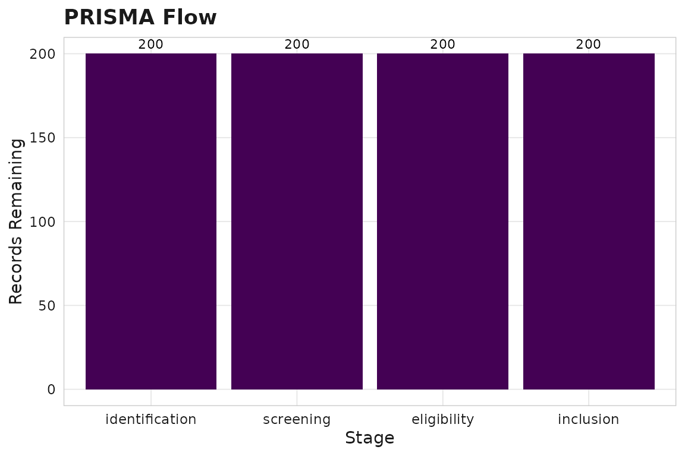

Research questions as objects
scimapR treats research questions as structured objects, not just query strings.
rq <- sm_question(
text = "Does spatial transcriptomics improve outcome prediction in colorectal cancer?",
framework = "PICO",
population = "colorectal cancer patients",
intervention = "spatial transcriptomics",
outcome = "survival or recurrence"
)
print(rq)
#>
#> ── <sm_question> ───────────────────────────────────────────────────────────────
#> ID: Q-ecd0161dbb634ba3
#> Framework: PICO
#> Created: 2026-05-09 17:28:42
#>
#> Question:
#> Does spatial transcriptomics improve outcome prediction in colorectal cancer?
#>
#> ── Structured fields
#> Population: colorectal cancer patients
#> Intervention: spatial transcriptomics
#> Outcome: survival or recurrence
#>
#> Languages: en
#>
#> ── Query strings
#> generic: (colorectal cancer patients) AND (spatial transcriptomics) AND
#> (survival or r...
#> pubmed: (colorectal cancer patients[tiab]) AND (spatial transcriptomics[tiab])
#> AND (s...
#> openalex: (colorectal cancer patients) AND (spatial transcriptomics) AND
#> (survival or r...
#> crossref: (colorectal cancer patients) AND (spatial transcriptomics) AND
#> (survival or r...Building a corpus from a question
# In production, this hits APIs:
corpus <- sm_corpus_for_question(rq, sources = c("pubmed", "openalex"))For this vignette, we use the synthetic example corpus:
corpus <- sm_example_corpus(with_screening = TRUE, seed = 42)Screening
Regex-based (deterministic)
screened <- sm_screen_regex(
corpus,
include_terms = c("transcriptom", "spatial"),
exclude_terms = c("mouse", "drosophila")
)
#> ✔ Regex screening: 73 included, 127 excluded.
nrow(screened$works)
#> [1] 200LLM-grounded screening
# Requires ellmer package and an API key
screened <- sm_screen_against_question(
corpus, rq,
llm = ellmer::chat_anthropic(),
stages = "title-abstract"
)Screening summary
sm_screen_summary(corpus)
#>
#> ── Stage: title-abstract (n=200)
#> exclude: 96 (48%)
#> include: 82 (41%)
#> unclear: 22 (11%)
#> # A tibble: 3 × 4
#> stage decision n pct
#> <chr> <chr> <int> <dbl>
#> 1 title-abstract exclude 96 48
#> 2 title-abstract include 82 41
#> 3 title-abstract unclear 22 11PRISMA flow
prisma <- sm_screen_prisma(corpus)
prisma$counts
#> # A tibble: 4 × 4
#> stage n_entering n_excluded n_remaining
#> <chr> <int> <int> <int>
#> 1 identification 200 0 200
#> 2 screening 200 0 200
#> 3 eligibility 200 0 200
#> 4 inclusion 200 0 200
prisma$plot
Export for Rayyan/Covidence
sm_export_rayyan(corpus, "my_corpus.ris")
sm_export_covidence(corpus, "my_corpus_covidence.ris")